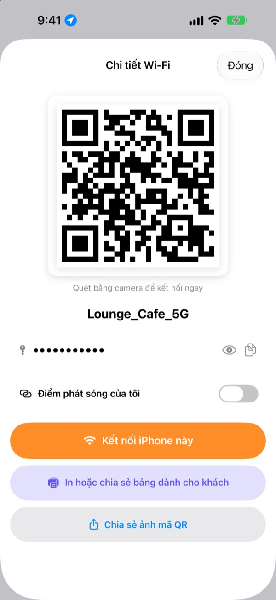
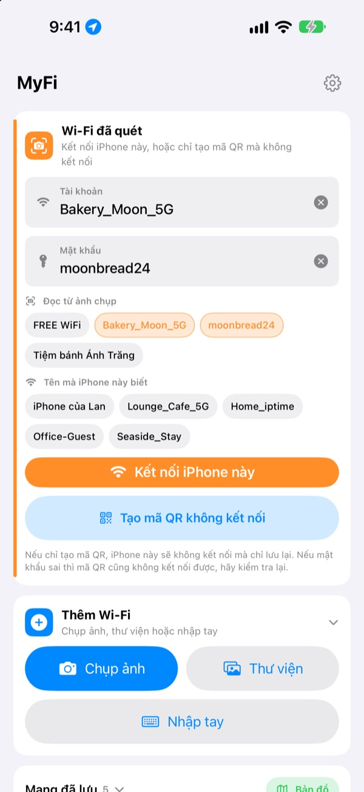
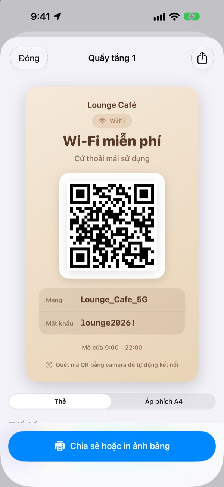
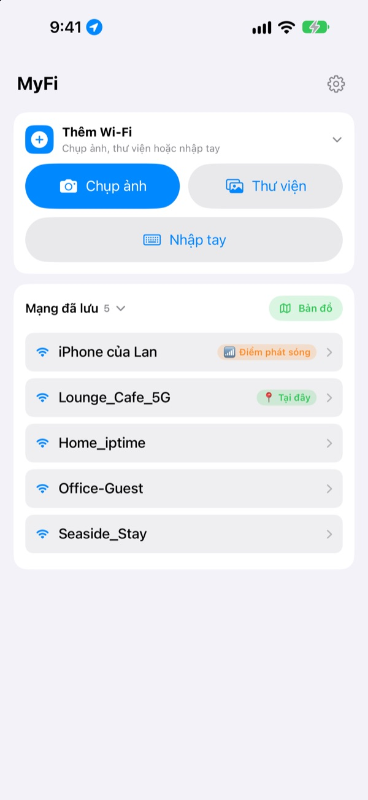

Đừng đọc mật khẩu nữa.
Chỉ cần một mã QR.
Bạn bè chỉ cần đưa camera vào là vào mạng. Bảng Wi-Fi trên tường quán cà phê? Chụp một tấm là iPhone này kết nối. Hết cảnh chép sai từng ký tự.
Mọi tính năng đều miễn phí. iPhone chạy iOS 17 trở lên.

Tạo mã QR cho Wi-Fi của bạn
Đổi tên hoặc mật khẩu là bảng đổi theo ngay. Đưa camera điện thoại vào, lời mời kết nối sẽ hiện ra thật.
"Mật khẩu Wi-Fi là gì nhỉ?" Hôm nay là lần thứ mấy rồi?
Đọc cho khách thì nhầm chữ hoa chữ thường. Chép bảng trên tường thì lẫn số 0 với chữ O. Rồi lại giải thích từ đầu. MyFi gói tất cả lại trong một tấm ảnh và một mã QR.
Chụp là kết nối
Chụp bảng Wi-Fi hoặc hóa đơn, hay chọn ảnh từ thư viện. MyFi đọc tên mạng và mật khẩu rồi kết nối iPhone này. Nếu trên bảng có cả mã QR, ứng dụng đọc mã QR trước để thông tin chính xác.
Nếu chữ không rõ, chỉ cần kéo mảnh chữ lấy từ ảnh vào ô tên hoặc mật khẩu.

Tạo và in bảng Wi-Fi cho khách
Chọn một trong 7 chủ đề, thêm tên quán, logo và các dòng như giờ mở cửa. Chọn dạng thẻ hoặc áp phích A4 dọc, lưu thành ảnh hoặc in ngay bằng AirPrint.
Làm sẵn nhiều bảng cho từng quán, từng bàn, và sửa bất cứ lúc nào.

Nơi quay lại sẽ hiện lên đầu
Wi-Fi bạn đã kết nối hay chia sẻ được lưu cùng vị trí lúc đó. Quay lại nơi cũ, Wi-Fi ở đó sẽ nằm trên cùng, và mọi nơi đã lưu đều xem được trên bản đồ.
Đặt mã QR của Wi-Fi hay chia sẻ nhất thành tiện ích trên Màn hình chính hoặc Màn hình khóa. Khách hỏi thì chỉ cần đưa màn hình ra.

Bắt đầu chỉ với ba bước
- 1
Mở ứng dụng
Ứng dụng hỏi quyền vị trí một lần, vì iOS chỉ cho ứng dụng có quyền này biết tên Wi-Fi đang dùng.
- 2
Chụp hoặc nhập
Chụp bảng Wi-Fi, hoặc nhập mật khẩu Wi-Fi của bạn một lần.
- 3
Kết nối hoặc đưa ra
Kết nối iPhone này, hoặc mở mã QR cho camera của người kia quét là xong.
Làm ở đâu
- Kết nối từ ảnh chụp bảng
Thêm Wi-Fi, chọnChụp ảnhhoặcThư viện, rồiKết nối iPhone này- Tự nhập thông tin
Thêm Wi-Fi, rồiNhập tay- Chỉ tạo mã QR
Tạo mã QR không kết nối- Gửi mã QR qua tin nhắn
- Chạm vào mạng đã lưu, rồi
Chia sẻ ảnh mã QR - Bảng dành cho khách
- Chạm vào mạng đã lưu, rồi
In hoặc chia sẻ bảng dành cho khách - Biến điểm phát sóng thành mã QR
- Chạm vào mạng đã lưu và bật
Điểm phát sóng của tôi - Kết nối hoặc chia sẻ chỉ bằng một lần vuốt
- Trong danh sách, vuốt phải để kết nối, vuốt trái để chia sẻ mã QR
- Xem những nơi đã lưu
Bản đồ, cạnhMạng đã lưu- Đặt mã QR trên Màn hình chính
- Chạm và giữ Màn hình chính, thêm tiện ích
Mã QR Wi-Ficủa MyFi
Bạn cũng có thể mở ngay mã QR bằng Siri hoặc ứng dụng Phím tắt.
Mọi tính năng đều miễn phí
Miễn phí
- Kết nối Wi-Fi từ ảnh chụp
- Tạo mã QR và chia sẻ dưới dạng ảnh
- Bảng cho khách với 7 chủ đề, dạng thẻ hoặc áp phích A4, in bằng AirPrint
- Tiện ích trên Màn hình chính và Màn hình khóa
- Bản đồ các Wi-Fi đã lưu
- Không quảng cáo, không cần đăng ký
Ủng hộ (tùy ý)
- Nếu thích, bạn có thể gửi tiền tip để ủng hộ việc phát triển
- Tiền tip không mở khóa gì cả. Không tip vẫn dùng được mọi tính năng
Tiền tip là một khoản thanh toán nhỏ, trả một lần.
Không có gói đăng ký, không có tính năng trả phí.
Câu hỏi thường gặp
Sao tôi phải tự nhập mật khẩu?
Theo chính sách bảo mật của iOS, không ứng dụng nào đọc được mật khẩu Wi-Fi đã lưu trên máy. Vì vậy MyFi tự nhận tên mạng, còn mật khẩu bạn chỉ nhập lần đầu. Từ đó về sau ứng dụng dùng giá trị đã lưu.
Không thấy tên Wi-Fi đang kết nối.
iOS chỉ cho ứng dụng có quyền vị trí biết tên Wi-Fi. Hãy cho phép MyFi trong Cài đặt › Quyền riêng tư & Bảo mật › Dịch vụ định vị. Vị trí chỉ dùng để đọc tên mạng và nhận ra những nơi bạn quay lại.
Ứng dụng đọc sai tên hoặc mật khẩu.
Chụp gần hơn và thẳng hơn. Nếu vẫn sai, kéo mảnh chữ đúng từ ảnh vào ô hoặc tự sửa. Nếu bảng có mã QR Wi-Fi, MyFi sẽ đọc mã đó và điền đúng thông tin.
Ứng dụng đọc được loại bảng nào?
Đọc tốt nhất bảng ghi bằng tiếng Anh hoặc tiếng Hàn với nhãn như ID, PW, SSID, Network, Password. Kể cả không có nhãn, ứng dụng vẫn tìm ra dòng trông giống mật khẩu. Mã QR Wi-Fi trên bảng được đọc chính xác dù bằng ngôn ngữ nào.
Người nhận mã QR kết nối thế nào?
Dù iPhone hay Android, chỉ cần dùng camera có sẵn quét mã rồi chạm vào lời mời kết nối. Không cần cài ứng dụng nào.
Người khác có thấy mật khẩu của tôi không?
Mã QR chứa thông tin đăng nhập Wi-Fi theo chuẩn. Chia sẻ hay không luôn do bạn chọn, và bạn có thể ẩn mật khẩu trên bảng dành cho khách.
Sao tôi không kết nối được điểm phát sóng của chính mình?
Điểm truy cập cá nhân của iPhone chính là chiếc điện thoại này, nên nó không thể tự kết nối với chính nó. Bật Điểm phát sóng của tôi, MyFi sẽ coi nó là mã QR để chia sẻ cho người khác.
Thông tin Wi-Fi của tôi được gửi đi đâu?
MyFi không có máy chủ. Tên mạng, mật khẩu, kết quả đọc ảnh và vị trí chỉ được xử lý và lưu trên thiết bị của bạn. Không quảng cáo, không theo dõi. Ứng dụng chỉ gửi thống kê sử dụng ẩn danh và báo cáo lỗi lên Apple iCloud để sửa lỗi.
Dùng được trên thiết bị nào?
iPhone chạy iOS 17 trở lên. Ứng dụng có 24 ngôn ngữ.
Có câu hỏi hay góp ý? Hãy gửi đến leeo@kakao.com. Tôi thường trả lời trong 2 đến 3 ngày.